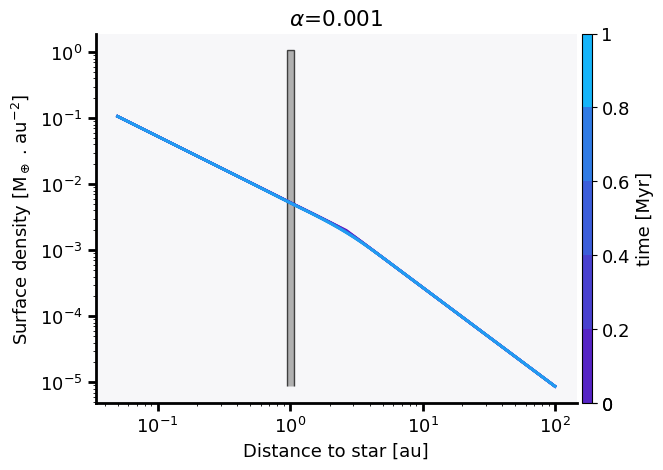
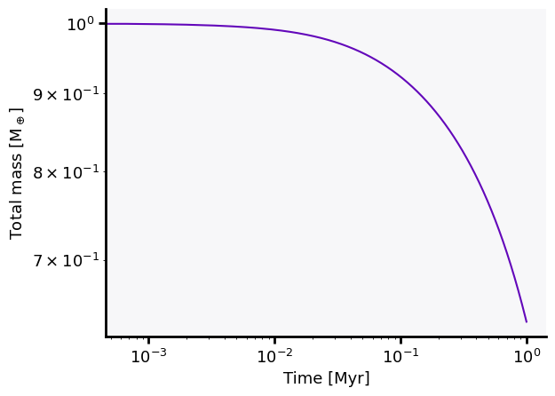
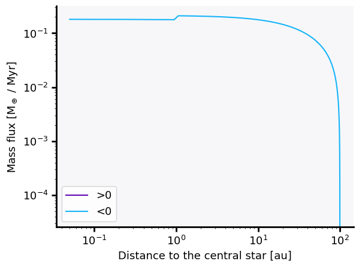
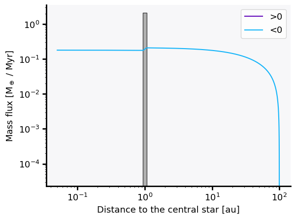
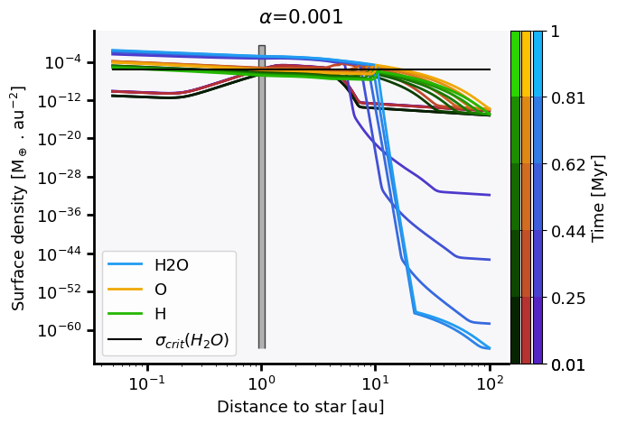
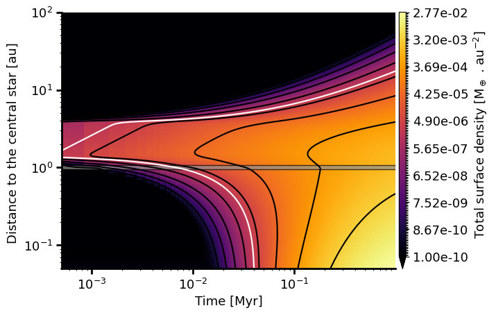
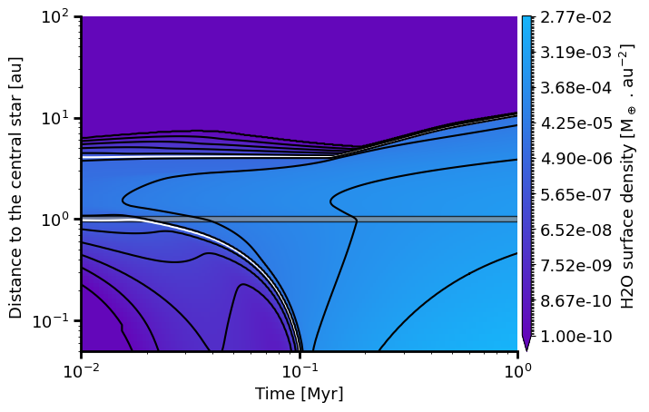

Getting started
Installation
You can install this library directly with pip:
pip install phenigraph
Alternatively, you can download it from GitLab, after which you will need to compile it. In the main folder, run the following command :
python setup.py bdist_wheel
The installation wheel file will be in the newly created ‘dist’ folder. To install the library in the local environment, use the following command:
pip install /path/to/wheelfile.whl
Directory and data needed before starting
The library assumes that the working directory has a specific structure. You can change the reference directory and the location of necessary data files by creating a paths.txt file in the working directory.
The necessary data are:
The water cross-section which can be found on this page: The file should be saved as
H2O.txtin a directory calledLeiden_database. The name and the location of this directory can be changed in thepaths.txtfile.The interstellar spectrum which can be found at this page. The file should be saved as
ISRF.datin theLeiden_databasedirectory Several radiations files are available on this page, the standard ISRF works fine for most cases.The luminosity data. These data are much more difficult to obtain since they must be produced by Stellar simulation codes such as cesam2k20. The structure of this file will be described in a dedicated section. Without such files, the luminosity will be assumed to be a constant
Lsthat can be set in a configuration dictionary (see later) and the water photodissociation due to the central star will not be modelled.
The directory structure :
The main directory referred to as racine in the paths file is assumed to be the current working directory.
It is assumed that this main file contains a directory named ‘Leiden_database’, which contains the ‘H2O.txt’ and ‘ISRF.dat’ files.
If the user has data modelling the central star, it is assumed to be in a ‘data_star’ directory inside the main
racine directory, in a .npz file called data_fus.npz.
Finally, a ‘Results’ directory is needed to save the Sol objects.
The paths.txt file
If you don’t want to work inside the ‘racine’ directory or want the data to be organised differently, you can write a ‘paths.txt’ file. This file is structured as follows: One line stands for one directory. Each line starts with the name of the directory to be relocated; this can be ‘racine’, ‘Results’, ‘data_leiden’ or ‘data_stars’. Then a comma separates this name from the path to the new directory.
Example: Reproduce the default structure.
racine,.
results,./Results
data_leiden,./Leiden_database
data_stars,./data_stars/data_fus.npz
A first example
In the following sections, we will assume that these libraries are imported with the following names:
import numpy as np
from scipy.integrate import cumulative_trapezoid
import phenigraph as g # To generate plots
from diffenix import time_integration as ti # Only the time_integration submodule is nedded for the user
All the information that characterises the system to be modelled, as well as information on the models used and numerical settings, should be included in a single dictionary. Examples of such dictionaries are included with the library and can be modified to fit the user’s needs.
Setting up a new simulation
Let’s start with a disc that initially contains one Earth’s mass of hydrogen, with no asteroid belts or Kuiper belt, in a solar system-like system.
This system contains one planet with the same mass as Earth, located one astronomical unit from its central star.
To achieve this, let’s load the sys_sol_ppd configuration dictionary :
conf_dic: dict = ti.sys_sol_ppd.copy()
sys_sol_ppd is defined as follows in the library:
sys_sol_ppd: dict = {"racine": racine, "results": results,
"C_L": C_L, "C_M": C_M, "C_t": C_t,
"Ms": Msun, "Ts": np.double(5500.), "Rs": Rsun, "Ls": Lsun,
"a_in": .05 * au, "a_out": 100 * au, "a0": 2.65 * au,
"T0": T0, "pls_temp": np.double(-1 / 2), "mH_init": Mearth,
"alpha": np.double(1e-3), "gamma": np.double(1.),
"AB_mdot_st_init": np.double(1e-10) * Mearth / Myr,
"AB_Mbelt": np.double(0.12) * Mearth,
"AB_Abelt": np.double(0.06),
"AB_a0": np.double(2.65) * au, "AB_delta_r": np.double(2.65 / 2.) * au,
"AB_K": np.double(1e-5 * C_L * C_L / C_t), "AB_Phi": np.double(0.6),
"AB_rp": np.double(1e-6 * C_L),
"AB_f_ice": np.double(0.2), "AB_rho_refr": np.double(2.5e3 * C_M / (C_L * C_L * C_L)),
"AB_rho_ice": np.double(1.e3 * C_M / (C_L * C_L * C_L)), "AB_sublimation_model": "none",
"AB_const_mdot": np.double(1e-1) * Mearth / Myr,
"AB_SD_amax": np.double(1.e6) * C_L, "AB_SD_abig": np.double(120e3) * C_L,
"AB_SD_amed": np.double(20.e3) * C_L, "AB_SD_amin": C_L,
"AB_SD_qh": np.double(-4.5), "AB_SD_qm": np.double(-1.2), "AB_SD_ql": np.double(-3.6),
"AB_sb": np.double(316) * C_L, "AB_e": np.double(0.075), "AB_i": np.double(0.075 / 2.),
"AB_As": np.double(5.) * C_E / C_M, "AB_bs": np.double(-0.1), "AB_bg": np.double(0.5),
"AB_t0_diss": 150 * Myr, "AB_t1_diss": Myr,
"KB_mdot_st_init": zero,
"KB_Mbelt": np.double(0.01 * Mearth), "KB_Abelt": np.double(0.06),
"KB_a0": np.double(44) * au, "KB_delta_r": np.double(8) * au,
"KB_K": np.double(1e-10 * C_L * C_L / C_t), "KB_Phi": np.double(0.6),
"KB_rp": np.double(1e-6 * C_L),
"KB_f_ice": np.double(0.2), "KB_rho_refr": np.double(2.5e3 * C_M / (C_L * C_L * C_L)),
"KB_rho_ice": np.double(1.e3 * C_M / (C_L * C_L * C_L)), "KB_sublimation_model": "none",
"KB_const_mdot": zero,
"KB_SD_amax": np.double(1.e6) * C_L, "KB_SD_abig": np.double(120e3) * C_L,
"KB_SD_amed": np.double(20.e3) * C_L, "KB_SD_amin": C_L,
"KB_SD_qh": np.double(-4.5), "KB_SD_qm": np.double(-1.2), "KB_SD_ql": np.double(-3.6),
"KB_sb": np.double(316) * C_L, "KB_e": np.double(0.075), "KB_i": np.double(0.075 / 2.),
"KB_As": np.double(5.) * C_E / C_M, "KB_bs": np.double(-0.1), "KB_bg": np.double(0.5),
"KB_t0_diss": np.double(10.) * Gyr, "KB_t1_diss": np.double(10.) * Gyr,
"a_planets": np.array([au]), "m_planets": np.array([Mearth]), "f_accr": np.double(0.5),
"t0": np.double(5. * Myr),
"IT_s": 3000, "dip": 10, "rtol": np.double(1e-6), "atol": np.double(1e-250), "method_root": 'RK45',
}
Integration in time
Then let’s start our first simulation!
sol: ti.Sol = ti.time_integration(tf= ti.Myr, save_time_step=0.1*ti.Myr,consts_params=configs)
The evolution of the disc is modelled from an initial time of zero to a final time of one million years, t_f. The initial time is defined as the point at which the protoplanetary disc dissipates. This can be set relative to the star’s lifetime in the configuration dictionary via the “t0” parameter. This is only useful where luminosity data are provided for the central star.
The result is saved in a dedicated Sol object, sol.
If the integration stops before the end of the integration time tf, the data will not be lost.
This object is automatically saved to the ‘Results’ directory at each 0.1 Myr time step.
As there is no Simulation entry in the configuration dictionary, the simulation’s name is generated
automatically and is displayed when the integration begins.
If the code is run for the first time, it should be ‘Simulation_1’. The number will then increase for each new simulation.
A new directory with the name of the simulation should have been created inside the ‘Results’ directory.
The .npz file containing the Sol object is located inside this directory and is named Simulation_diffusion.npz.
To reload this simulation, follow these steps:
sol = ti.Sol(filename="Simulation_diffusion", directory=ti.results+"/Simulation_1")
Diagnotics
Surface density
All diagnostics can be run for this simulation. Let’s begin with the surface density. The Sol object has a specific method that generates a Graphique representing the surface density at different times as a function of the distance to the central star :
gr = sol.graph_surface_density(save=True)

The argument ‘save=True’ means that the graph and the PNG image will be saved in the simulation directory. If you want to save the Graphique under a different name or in a different location, you can do so by entering the desired name and location :
gr = sol.graph_surface_density()
gr.filename = "you_new_name"
gr.directory = "your directory" # To save the plot in the current working directory, one can comment this line
gr.save_figure(dpi=100) # A png image of 100 dpi will be saved
gr.save() # The Graphique object will be saved to be reused (and modified if needed) later
Total mass
It is also possible to access the total disc mass as a function of time :
gr = g.loglog(sol.tps / ti.Myr, sol.total_mass() / ti.Mearth, show=False) # Creation of the Graphique
gr.config_ax(xlabel="Time [Myr]", ylabel = "Total mass [M$_\oplus$]") # Setting label for x and y axis
gr.show() # Show the plot
gr.filename = "Total_mass"
gr.directory = sol.directory # To save the plot in the current working directory, one can comment this line
gr.save_figure(dpi=100) # A png image of 100 dpi will be saved
gr.save() # The Graphique object will be saved to be reused (and modified if needed) later

Mass and momentum conservation
To save memory, the saved timesteps can be larger than the real timesteps. However, the values used for diagnostics are saved at each real timestep in order to control mass and momentum conservation :
gr = g.loglog(sol.diag["time"] / ti.Myr, [sol.mass_conservation(), sol.momentum_conservation()],
label=["Masse conservation", "Momentum conservation"], show=False) # Creation of the Graphique
gr.config_ax(xlabel="Time [Myr]", ylabel = "Relative variations") # Setting label for x and y axis
gr.show() # Show the plot
gr.filename = "Mass_conservation"
gr.directory = sol.directory # To save the plot in the current working directory, one can comment this line
gr.save_figure(dpi=100) # A png image of 100 dpi will be saved
gr.save() # The Graphique object will be saved to be reused (and modified if needed) later

Mass flux
It is possible to get the mass flux for an index i of sol.tps. Let’s plot the last one at one million years:
gr = gr=g.loglog(sol.r, [sol.mass_flux(-1), -sol.mass_flux(-1)], label=[">0", "<0"], show=False)# Creation of the Graphique
gr.config_ax(xlabel="Distance to the central star [au]", ylabel = "Mass flux [M$_\oplus$ / Myr]")
gr.show() # Show the plot
gr.filename = "mass_flux"
gr.directory = sol.directory # To save the plot in the current working directory, one can comment this line
gr.save_figure(dpi=100) # A png image of 100 dpi will be saved
gr.save() # The Graphique object will be saved to be reused (and modified if needed) later

As can be seen, there is no outer flux. The boundary condition implies that the outer flux is zero. There is a sharp decrease in the mass flux in the inner part of the system due to the planet’s accretion of gas. This can be confirmed by plotting a grey-shaded area on the planet’s sink cells :
sol.add_planets_to_graph(gr, show=True)
gr.save_figure(dpi=100) # A png image of 100 dpi will be saved
gr.save() # The Graphique object will be saved to be reused (and modified if needed) later

Similar plots can be done for the radial velocity.
The planet
In addition to the diagnostic values saved at each timestep, the mass flux at the outer and inner areas of the sink cells of the planet are saved. The accretion rate and the final accreted mass can be deduced from these values.
gr=g.loglog(sol.diag["time"], [-np.array(sol.flux_planets)[:,1,0], -np.array(sol.flux_planets)[:, 0,0]],
label=["Inner flux", "Outer flux"], show=False)
gr.config_ax(xlabel="Time [Myr]", ylabel = "Mass flux [M$_\oplus$ / Myr]")
gr.filename="planet_mass_flux"
gr.save_figure(dpi=100) # A png image of 100 dpi will be saved
gr.save() # The Graphique object will be saved to be reused (and modified if needed) later

The shape of sol.flux_planets is (len(sol.tps), 2, number of planets).
Then we can get an estimation of the accreted mass onto the planet as a function of time :
gr=g.loglog(sol.diag["time"], ti.cumulative_trapezoid(np.array(sol.flux_planets)[:,1,0]
-np.array(sol.flux_planets)[:, 0,0],
sol.diag["time"], initial=0.) / ti.Mearth, show=False)
gr.config_ax(xlabel="Time [Myr]", ylabel = "Accreted mass [M$_\oplus$]")
gr.filename="Simulation_ppd_planet_mass"
gr.save()
gr.save_figure(dpi=400)

An asteroid belt with a constant gas mass generation rate
The previous simulation was initialised with a given mass of hydrogen and no further mass was produced. There was also only one molecular species. However, this code can model the evolution of multiple chemical species, from their production at the asteroid belt to their photodissociation. Let’s start with a simple case involving a constant gas production rate at the asteroid belt level, using the same system as before. After the evolution of the total surface density, the evolution of the mass fraction of each chemical species is integrated and saved at different times. To avoid divergence in the numerical integration of this second set of equations, it is recommended that the simulation is initialised with a small amount of water. This is controlled by the ‘AB_mdot_st_init’ parameter in the configuration dictionary. The system is initialised with a steady-state water gas disc and a gas generation rate of AB_mdot_st_init. In this simulation, there is no primordial hydrogen remaining.
configs=ti.sys_sol_ast.copy()
configs["AB_sublimation_model"] = "constant_rate"
configs["AB_mdot_st_init"] = np.double(1e-10) * ti.Mearth / ti.Myr # setting the initial state
sol = ti.time_integration(tf= ti.Myr, save_time_step=0.1*ti.Myr, consts_params=configs)
The surface density
Since there are multiple species, the graph_surface_density is a bit more difficult to read
gr = sol.graph_surface_density(save=True)

But it’s possible to only plot the water and neutral oxygen (the behavior of neutral hydrogen is very similar to neutral oxygen).
gr = sol.graph_surface_density(species=["H2O","O"], show=False)
gr.config_ax(ylim=[1e-15, 0.1])
gr.filename = "Surface_density"
gr.directory = sol.directory
gr.save_figure(dpi=100)
gr.save()
gr.show()

The species names are all in capital letters and can be found in sol.nom_mu.
To gain a better understanding of how the surface density has changed over time, you can also use a second type of plot :
gr_tot = sol.image_surface_density(save=True, show=True) # For the total surface density
gr_tot = sol.image_surface_density("H2O', save=True, show=True, cmap="default", color_min=g.C1,
color_max=g.C2) # For the water surface density
gr_tot = sol.image_surface_density("O', save=True, show=True, plot_sigma_crit=False, cmap="default",
color_min=g.C17, color_max=g.C13) # For the oxygen surface density



These plots can be used to evaluate changes in surface density over time, such as those in the neutral oxygen levels.
For example, it is produced at the beginning of the simulation until the critical surface density is reached. It is produced at the beginning of the simulation until the critical surface density is reached.
Then the surface density of neutral oxygen decreases.
You can choose a Matplotlib colour bar; the default is inferno. You can also build a custom color bar.
from the colour minimum to the colour maximum (the cmap parameter should be set to default).
See the Phenigraph documentation for more information.
The thermal sublimations models
There are different models for the gas generation rate. There are two based on the gas sublimation by thermal heating.
The first and the simple one is referred in the configuration dictionary to be "thermal_diff".
This model assumes that the sublimation timescale and gas diffusion into the asteroid or KBO is negligible too.
It only evaluates the mass generation rate by the thermal diffusion timescale set by the thermal diffusion coefficient K
in the configuration dictionary (AB_K and KB_K for the asteroid belt and the Kuiper belt respectively)
Let model a young Kuiper belt similar to the one of huet et al 2025 : In this simulation, only CO in produced at the Kuiper belt level
configs=ti.sys_sol_kuip.copy()
configs["KB_sublimation_model"] = "thermal_diff"
sol = ti.time_integration(tf= 50 * ti.Myr, save_time_step=ti.Myr, consts_params=configs)
The configuration dictionary
Here, we introduce each value needed to build the configuration dictionary. Best practice is to adapt one of the default configuration dictionaries, such as sys_sol_ast, sys_sol_ast_kuip or sys_sol_appd, to your needs, rather than rebuilding a new one from scratch.
racine→ the path to the racine directoryresults→ the path to the subdirectory resultC_L: np.float64 → the length conversion unit (cannot be different of the global value (see the Default unit system subsection to modify the global system of unit))C_M: np.float64 → the mass conversion unit (cannot be different of the global value (see the Default unit system subsection to modify the global system of unit))C_t: np.float64 → the time conversion unit (cannot be different of the global value (see the Default unit system subsection to modify the global system of unit))Ms: np.float64 → The central star’s massTs: np.float64 → The central star’s surface temperature (will be ignored if luminosity datas are provided)Rs: np.float64 → The central star’s radius (will be ignored if luminosity datas are provided)Ls: np.float64 → The central star’s luminosity (will be ignored if luminosity datas are provided)a_in: np.float64 → The inner boundary of the integration domaina_out: np.float64 → The outer boundary of the integration domaina0: np.float64 → The radius used for the primordial hydrogen distribution (assumed to be the steady state centered on a0)T0: np.float64 → the temperature at a0 (will be ignored if luminosity datas are provided)pls_temp: np.float64 → the temperature radial power slopemH_init: np.float64 → The initial mass of primordial hydrogenalpha: np.float64 → The viscous parametergamma: np.float64 → The adiabatic constantAB_mdot_st_init: np.float64 → The initial steady state mass generation rate for the asteroid beltAB_Mbelt: np.float64 → The total asteroid belt’s massAB_Abelt: np.float64 → The asteroids albedoAB_a0: np.float64 → The mean semi-major axis of the asteroid beltAB_delta_r: np.float64 → The half radial width of the asteroid belt (the belt extend from AB_a0 - AB_delta_r ti AB_a0 + AB_delta_r, be carful that the inner and outer bondary of the integration domain is smaller / larger than the inner / outer limit of the belt (i.e. a_in < AB_a0 - AB_delta_r and AB_a0 + AB_delta_r < a_out).AB_K: np.float64 → The thermal diffusivity in asteroids (dimension: \([L]^2 . [T]^{-1}\))AB_Phi: np.float64 → The asteroids porosity (no dimensions)AB_rp: np.float64 → The pore’s radius for asteroidsAB_f_ice: np.float64 → The ice to refractory mass ratio for asteroids (no dimensions)AB_rho_refr: np.float64 → The density of refractory materials for asteroids (dimension: \([M] . [L]{-3}\))AB_rho_ice: np;float64 → The ice density for asteroids (dimension: \([M] . [L]{-3}\))AB_sublimation_model: str → The sublimation model, can benone,constant_rate,thermal_diffusionorthermal_fullAB_const_mdot: np.float64 → The mass generation rate for theconstant_ratesublimation levelAB_SD_amax: np.float64 → The sizes used for the size distribution of asteroid belt (maximum size)AB_SD_abig: np.float64 → The sizes used for the size distribution of asteroid beltAB_SD_amed: np.float64 → The sizes used for the size distribution of asteroid beltAB_SD_amin: np.float64 → The sizes used for the size distribution of asteroid belt (minimum size)AB_SD_qh: np.float64 → The power slope of size distribution betweenAB_SD_amaxandAB_SD_bigAB_SD_qm: np.float64 → The power slope of size distribution betweenAB_SD_bigandAB_SD_medAB_SD_ql: np.float64 → The power slope of size distribution betweenAB_SD_medandAB_SD_minAB_sb:AB_e: np.float64 → Asteroids mean eccentricity (used by thecollisionssublimation model)AB_i: np.float64 → Asteroids mean inclination (used by thecollisionssublimation model)AB_As: np.float64 → Asteroids minimum massic disruption energy (used by thecollisionssublimation model) (dimension \([L]^2 . [T]^{-2}\)), see Löhne et al. 2008AB_bs: np.float64 → Slope of asteroids massic disruption energy (used by thecollisionssublimation model) (no dimension), see Löhne et al. 2008AB_bg: np.float64 → Slope of asteroids massic disruption energy (used by thecollisionssublimation model) (no dimension), see Löhne et al. 2008AB_t0_diss: np.float64 → Asteroid belt lifetime before starting being disruptedAB_t1_diss: np.float64 → Asteroid belt disruption timescaleKB_mdot_st_init: np float64 → The initial steady state mass generation rate for the Kuiper beltKB_Mbelt: np.float64 → The total kuiper belt’s massKB_Abelt: np.float64 → KBO’s albedo (no dimension)KB_a0: np.float64 → The mean semi-major axis of the Kuiper beltKB_delta_r: np.float64 → The half radial width of the Kuiper belt (the belt extend from KB_a0 - KB_delta_r ti KB_a0 + KB_delta_r, be carful that the inner and outer bondary of the integration domain is smaller / larger than the inner / outer limit of the belt (i.e. a_in < KB_a0 - KB_delta_r and KB_a0 + KB_delta_r < a_out).KB_K: np.float64 → The thermal diffusivity in Kuiper Belt’s object (dimension: \([L]^2 . [T]^{-1}\))KB_Phi: np.float64 → The KBO’s porosity (no dimensions)KB_rp: np.float64 → The pore’s radius for KBOKB_f_ice: np.float64 → The ice to refractory mass ratio for KBO (no dimensions)KB_rho_refr: np.float64 → The density of refractory materials for KBOs (dimension: \([M] . [L]{-3}\))KB_rho_ice: np.float64 → The density of CO ice for KBOs (dimension: \([M] . [L]{-3}\))KB_sublimation_model: str → The sublimation model, can benone,constant_rate,thermal_diffusionorthermal_fullKB_const_mdot: np.float64 → The mass generation rate for theconstant_ratesublimation levelKB_SD_amax: np.float64 → The sizes used for the size distribution of kuiper belt (maximum size)KB_SD_abig: np.float64 → The sizes used for the size distribution of kuiper beltKB_SD_amed: np.float64 → The sizes used for the size distribution of kuiper beltKB_SD_amin: np.float64 → The sizes used for the size distribution of kuiper belt (minimum size)KB_SD_qh: np.float64 → The power slope of size distribution betweenAB_SD_amaxandAB_SD_bigKB_SD_qm: np.float64 → The power slope of size distribution betweenAB_SD_bigandAB_SD_medKB_SD_ql: np.float64 → The power slope of size distribution betweenAB_SD_medandAB_SD_minKB_sb:KB_e: np.float64 → KBOs mean eccentricity (used by thecollisionssublimation model)KB_i: np.float64 → KBOs mean inclination (used by thecollisionssublimation model)KB_As: np.float64 → KBOs minimum massic disruption energy (used by thecollisionssublimation model) (dimension \([L]^2 . [T]^{-2}\)), see Löhne et al. 2008KB_bs: np.float64 → Slope of KBOs massic disruption energy (used by thecollisionssublimation model) (no dimension), see Löhne et al. 2008KB_bg: np.float64 → Slope of KBOs massic disruption energy (used by thecollisionssublimation model) (no dimension), see Löhne et al. 2008KB_t0_diss: np.float64 → Kuiper belt lifetime before starting being disruptedKB_t1_diss: np.float64 → Kuiper belt disruption timescalea_planets: np.array[np.float64] → Array of planet’s semi-major axis (one dimensional array)m_planets: np.array[np.float64] → Array of planet’s masses (one dimensional array, be sure that it have the same size ofa_planets)f_accr: np.float64 → The planet’s accretion efficiency (no dimension)t0: np.float64 → The protoplanetary disc lifetimeIT_s: int → The number of spatial stepsdip: int → half of the number of sink cells around a planetrtol: np.float64 → The relative tolerance for time integration (see scipy.integrate.solve_ivp documentation)atol: np.float64 → The absolute tolerance for time integration (see scipy.integrate.solve_ivp documentation)method_root: str → The time integration method {RK45,RK23,DOP853,Radau,BDF,LSODA} (see scipy.integrate.solve_ivp documentation)
Default unit system
It works with its own unit system, which is fully described by the conversion factor from the universal MKSA system.
Only the temperature unit is set to Kelvin and cannot be modified.
There are then three main conversion factors, C_L, C_M and C_t to convert any length, mass or time from metres, kilograms and seconds to the code’s length, mass or time units. Multiply the value by the correct conversion factor to make the conversion.
To simplify operations, there are derived conversion factor units, such as C_F C_rho C_E and C_Lum to convert force, density, energy or luminosity from the MKSA system to the code unit system.
The default values are:
For the time : one code unit is equal to one million years (hence \(C_L = 1 / (3600 * 24 * 365.25 * 1e6)\).)
For the mass : one code unit is equal to one earth mass (hecne \(C_L = 1 / M_\oplus\))
For the lenght : one code unit is equal to one astronomical unit
To convert code values into MKSA units, divide them by the relevant conversion facteur unit.
Example:
mass_mksa = masse / C_M
lenght_mksa = length / C_L
time_mksa = time / C_t
surface_density_mksa = surface_density * C_L * C_L * C_L / C_M
Typical constants can also be used for unit conversion. For example, the constants yr, kyr, Myr or Gyr can be used to convert times into years, kiloyears, megayears or gigayears.
It is also possible to convert mass into solar mass by dividing the mass by one solar mass.
The default values were chosen to fit the typical values for our models. However, it is also possible to modify them if needed. Since the ‘Sol’ objects keep their own conversion factors, they can be loaded with the system of units that was used to integrate them. All conversions will be made automatically.
To do so, a new dictionary of constants must be built and saved into the working directory or the ‘racine’ directory with the name ‘constantes’ using np.saved_compressed method :
new_consts: dict = {"racine": new_new_racine, "results": new_results,
"C_L": new_C_L, "C_M": new_C_M, "C_t": new_C_t,
"Ms": new_Ms, "Ts": new_Ts, "Rs": new_Rs, "Ls": new_Ls,
"a_in": new_a_in, "a_out": new_a_out, "a0": new_a0,
"T0": new_T0, "pls_temp": new_pls_temp, "m_dot": new_m_dot,
"alpha": new_alpha, "gamma": new_gamma,
"AB_Mbelt": new_AB_Mbelt, "AB_Abelt": new_AB_Abelt,
"AB_a0": new_AB_a0, "AB_delta_r": new_AB_delta_r,
"AB_K": new_AB_K, "AB_Phi": new_AB_Phi, "AB_rp": new_AB_rp,
"AB_f_ice": new_AB_f_ice, "AB_rho_refr": new_AB_rho_refr,
"AB_rho_ice": new_AB_rho_ice, "AB_sublimation_model": new_AB_sublimation_model,
"AB_SD_amax": new_AB_SD_amax, "AB_SD_abig": new_AB_SD_abig,
"AB_SD_amed": new_AB_SD_amed, "AB_SD_amin": new_AB_SD_amin,
"AB_SD_qh": new_AB_SD_qh, "AB_SD_qm": new_AB_SD_qm, "AB_SD_ql": new_AB_SD_ql,
"AB_sb": new_AB_sb, "AB_e": new_AB_e, "AB_i": new_AB_i,
"AB_As": new_AB_As, "AB_bs": new_AB_bs, "AB_bg": new_AB_bg, "AB_t0_diss": new_AB_t0_diss, "AB_t1_diss": new_AB_t1_diss,
"KB_Mbelt": new_KB_Mbelt, "KB_Abelt": new_KB_Abelt,
"KB_a0": new_KB_a0, "KB_delta_r": new_KB_delta_r,
"KB_K": new_KB_K, "KB_Phi": new_KB_Phi, "KB_rp": new_KB_rp,
"KB_f_ice": new_KB_f_ice, "KB_rho_refr": new_KB_rho_refr,
"KB_rho_ice": new_KB_rho_ice, "KB_sublimation_model": new_KB_sublimation_model,
"KB_SD_amax": new_KB_SD_amax, "KB_SD_abig": new_KB_SD_abig,
"KB_SD_amed": new_KB_SD_amed, "KB_SD_amin": new_KB_SD_amin,
"KB_SD_qh": new_KB_SD_qh, "KB_SD_qm": new_KB_SD_qm, "KB_SD_ql": new_KB_SD_ql,
"KB_sb": new_KB_sb, "KB_e": new_KB_e, "KB_i": new_KB_i,
"KB_As": new_KB_As, "KB_bs": new_KB_bs, "KB_bg": new_KB_bg, "KB_t0_diss": new_KB_t0_diss, "KB_t1_diss": new_KB_t1_diss,
"a_planets": new_a_planets, "m_planets": new_m_planets, "f_accr": new_f_accr,
"t0": new_t0,
"IT_s": new_IT_s, "dip": new_dip, "rtol": new_rtol, "atol": new_atol, "method_root": new_method,
}
np.saved_compressed(racine + "/constantes.npz", **new_consts)
The current constant dictionary can be loaded using the constantes() method, which can then be modified.
When converting units, ensure that all resulting values are also converted, as every value in the constant dictionary is in code unit.
The luminosity file
The central star’s luminosity is a key parameter for estimating the mass generation rate at the belt level in the ‘thermal_full’ model. It is also important for estimating the photodissociation rate. However, the central star’s luminosity can vary significantly in the early stages of a system’s life, when secondary gas production is assumed to occur (see kral et al 2024 for the solar system and Figure 1)

Figure 1 : Evolution of stellar luminosity as function of time for different star’s mass
To provide the requested data, one must first run stellar simulation (for example, using cesam2k20). These simulations must be done for several masses (as much as possible to get reliable interpolation).
All the data should then be merged into a single .npz created by np.saved_compressed.
This table must contain the following keys associated with arrays of the same sizes:
Age: This array contains the star’s age in Myr at each pointM: The star’s mass in sun’s mass (must be counstant for each star) at each pointLbol: The bolometric luminosity at each point in solar luminosityR: The star’s radius in solar radius at each pointReuv_3692: The luminosity fraction in the UVReuv_lya: The luminosity fraction in the UV